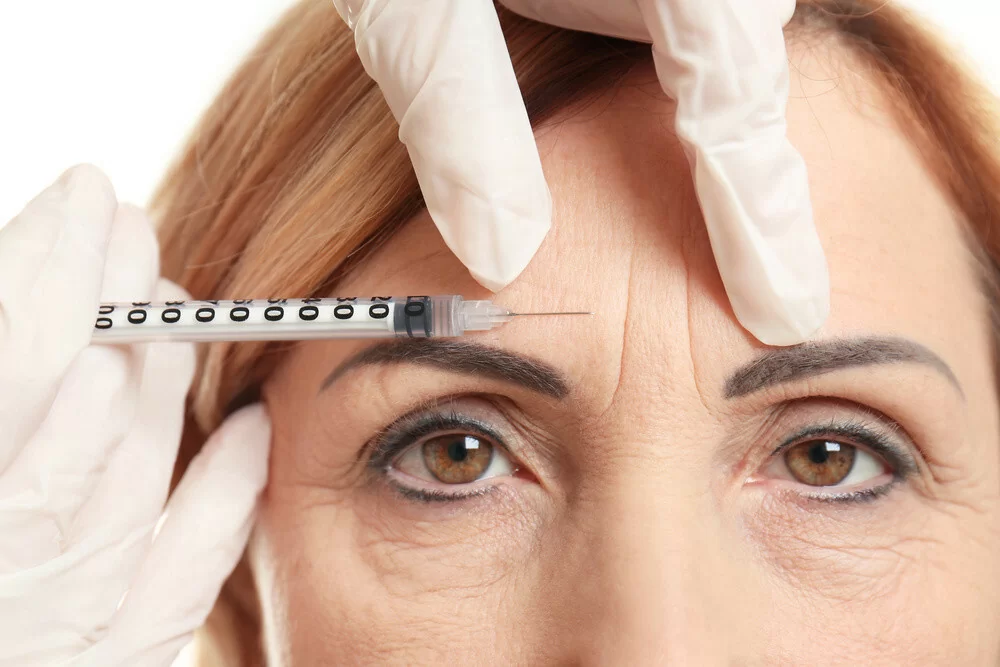

Botox para Bruxismo: Alívio de Dores na Mandíbula e Benefício Estético
O bruxismo — hábito de apertar ou ranger os dentes — afeta entre 8% e 31% da população adulta e causa dores de cabeça matinais, desgaste dentário, dores na mandíbula e hipertrofia do masseter. O Botox aplicado no masseter é hoje uma das soluções mais eficazes para controlar os sintomas do bruxismo, com o bônus de um refinamento visual do contorno facial.

O que é bruxismo e por que acontece?
O bruxismo é caracterizado pela contração involuntária dos músculos da mastigação — principalmente o masseter e o temporal — durante o sono (bruxismo do sono) ou vigília (bruxismo acordado). Pode causar rangido audível dos dentes ou apenas pressão silenciosa.
As causas são multifatoriais e não completamente elucidadas, mas incluem:
- Estresse e ansiedade: fator desencadeante ou agravante mais comum
- Fatores genéticos: predisposição familiar identificada em estudos
- Distúrbios do sono: apneia do sono associada em uma parcela significativa dos casos
- Medicamentos: antidepressivos SSRI podem induzir ou agravar bruxismo
- Mal oclusão dentária: contribui em alguns casos
Consequências do bruxismo não tratado
O bruxismo não é apenas um incômodo — é uma condição que, sem tratamento, causa danos progressivos:
- Desgaste do esmalte dentário e fraturas de dentes
- Disfunção temporomandibular (DTM) — dor e dificuldade para abrir a boca
- Cefaleia tensional matinal e durante o dia
- Dores no pescoço e ombros (tensão dos músculos adjacentes)
- Hipertrofia do masseter — músculo aumentado de volume, alargando o rosto
- Comprometimento da qualidade do sono
Como o Botox trata o bruxismo?
A toxina botulínica tipo A (Botox) aplicada diretamente no músculo masseter bloqueia parcialmente a transmissão neuromuscular, reduzindo a força de contração muscular sem eliminar a função mastigatória normal.
O resultado prático é que o paciente continua mastigando normalmente, mas o músculo não consegue mais gerar a força intensa do bruxismo. Com o uso, o masseter hipertrofiado regride progressivamente de volume ao longo de 2 a 4 meses.
Alívio da dor
Redução das dores na mandíbula e cefaleia tensional em 80-90% dos casos
Proteção dentária
Redução da força de rangido, protegendo o esmalte e restaurações
Contorno facial
Masseter reduzido cria oval facial mais harmonioso e suave
Qualidade do sono
Melhora do sono com redução do bruxismo noturno
O procedimento: como é a aplicação?
O Botox para bruxismo é aplicado diretamente no músculo masseter em consultório médico, sem necessidade de anestesia geral ou sedação. O procedimento dura aproximadamente 15 a 20 minutos:
- O paciente morde levemente para o profissional palpar e marcar o músculo masseter
- São aplicados 20 a 40 unidades de toxina botulínica por lado (40 a 80 UI total), distribuídas em 3 a 4 pontos de injeção
- O paciente sai imediatamente, sem restrições significativas
O efeito começa a aparecer em 3 a 7 dias, com resultado pleno em 2 a 4 semanas. A redução do volume do masseter é progressiva e costuma ser mais notável após a segunda aplicação.
Botox para bruxismo é diferente da placa oclusal: A placa miorelaxante (confeccionada pelo dentista) protege os dentes mas não reduz a força do bruxismo. O Botox age na fonte — o músculo — reduzindo a intensidade das contrações. As abordagens são complementares e frequentemente indicadas em conjunto.
Agende avaliação para Botox no masseter
A Dra. Lara Cristian avalia o seu caso de bruxismo e define o protocolo mais adequado. Atendimento em Águas Claras, Brasília DF.
Botox para masseter: o benefício estético
Independentemente do bruxismo, muitas pessoas buscam o Botox no masseter pelo benefício estético: o slimming facial ou afinamento do rosto. Em pessoas com masseter hipertrofiado — seja por bruxismo, hábitos de mastigação ou genética — a aplicação de Botox promove uma redução gradual do músculo, transformando o contorno facial de quadrado para oval.
Este é um dos procedimentos mais populares em harmonização facial — especialmente em mulheres que desejam um contorno facial mais delicado. O resultado é sutil e completamente reversível.
Duração, manutenção e cuidados
O Botox para bruxismo dura em média 4 a 6 meses. Com reaplicações regulares, o masseter tende a reduzir progressivamente de volume — alguns pacientes conseguem aumentar o intervalo entre as sessões ao longo do tempo.
Cuidados após a aplicação são os mesmos do Botox facial convencional:
- Não massagear a região por 24 horas
- Evitar alimentos muito duros nos primeiros dias
- Não deitar nas primeiras 4 horas
- Aguardar 14 dias para avaliar o resultado final
Perguntas Frequentes
Não cura, mas trata os efeitos com grande eficácia. Ao reduzir a força de contração do masseter, diminui o desgaste dentário, alivia dores e previne progressão. É seguro e amplamente utilizado.
Em média 4 a 6 meses. Com reaplicações regulares, a duração pode aumentar progressivamente. O efeito de afinamento do rosto pode persistir por mais tempo.
Sim. Relaxa o masseter hipertrofiado, promovendo redução do volume na região lateral do rosto e contorno oval mais suave — benefício muito procurado independentemente do bruxismo.
Médicos com CRM ativo ou cirurgiões-dentistas com CRO, ambos com formação em procedimentos com toxina botulínica. Exige conhecimento preciso da anatomia regional.
Referências
- Lobbezoo F, Ahlberg J, Glaros AG, et al. "Bruxism defined and graded: an international consensus." J Oral Rehabil. 2013;40(1):2-4.
- Awan KH. "The therapeutic usage of botulinum toxin (Botox) in non-cosmetic head and neck conditions — An evidence based review." Saudi Pharm J. 2017;25(1):18-24.
Botox para Bruxismo em Águas Claras, Brasília
Alívio das dores e contorno facial mais harmonioso com Botox no masseter. Atendimento em Águas Claras com a Dra. Lara Cristian.